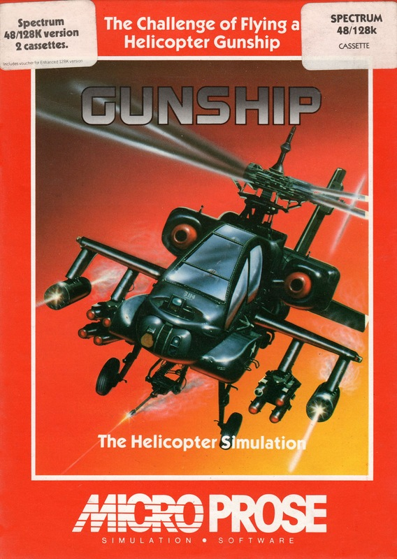
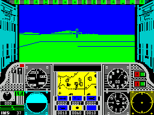

Gunship


{kind=link}

| Publisher: | MicroProse |
| Price: | £9.95 Cassette, £12.95 Disk |
| Year: | 1987 |
| Source: | CRASH, Issue 47 |

Flying a military helicopter is a tough job at the best of times — and when you’re in the thick of combat and they’re using you for target practice, quick thinking and perfect control are your best weapons. MicroProse’s Gunship, one of those complex simulations so popular in America, is an attempt to recreate the reality of flying a US Army armoured helicopter, the state-of-the-art AH-64A Apache introduced in 1982.

mission
To add to the effect, Gunship’s two cassettes and hard cardboard case (the American-style packaging which supported its great success on the Commodore 64 there) come complete with an 88-page ‘operations manual’ giving every detail of the game — and technical specifications of the real helicopter, its armament and its enemies.
Once in the chopper, you look through an armoured glass windscreen complete with cross hairs and gunsight. System-damage lights are situated above this, and below it is the main instrument console. This contains such navigational instruments as heading, course, and airspeed indicators; fuel gauges; weapon update systems; a radar jammer; and an enemy threat display. There’s also information on the helicopter’s ammunition, a sector map, a damage monitor and a radio which brings vital messages.
The helicopter is flown using two basic controls: the ‘cyclic joystick’, which controls the pitch and roll (direction of the copter), and the ‘collective’, which alters the angle of the rotor blades (and therefore the altitude).
Flying can be simplified by choosing the ‘easy’ rather than the ‘realistic’ flight option. This limits the pitch and roll elements of flight. (Other flight difficulties include air turbulence at low altitudes.) Landing, weather conditions and the enemy’s fighting skills can also be independently selected as easy or realistic.
The handbook recommends you use the realistic flying option as soon as possible, perhaps leaving the tricky landing and weather problems for later — and once the basics of the craft and combat have been mastered in practice attacks on the US training camp, actual combat missions abroad can begin.
One of four duty assignments can be chosen: Southeast Asia, Central America, the Middle East and Western Europe. Each assignment includes some missions which are more dangerous than others, and volunteer missions are exceptionally hazardous.
Briefings before each operation give the essential information. A password and countersign are particularly important; when you’re approaching a friendly base, ground control radios the password. And you’d better respond with the right countersign, or risk being blasted from the skies.
Briefings also include other information on such matters as the weather, enemy equipment and tactics.
But if you decide to be a chicken-livered cur you can go on sick call and get out of a mission.
On a mission, you’re flying into the unknown. The sector map gives a localised view of the ground, and a full-screen map can be activated to give the entire layout of the combat zone. This larger map isn’t entirely accurate, but does show all the major geographical features, friendly troops, installations and targets.
The AH-64A Apache is armed with standard weaponry, but before some missions it can be rearmed to your specifications. Cannon ammunition, flares and fuel can all be added (within a weight limit), or left behind if unnecessary.
The enemy strikes with ground fire from antiaircraft guns and surface-to-air missiles, and with its own airborne fighters.
But the enemy’s ground radar can be disrupted and your movements disguised by releasing metal strips of chaff, or by activating missile jamming circuits.
And combative Soviet-made HIND helicopters, sent up to attack, can be outmanoeuvred and blasted from the sky in a perilous battle of wits. (Note those HINDS; the enemies in Gunship are recognisably America’s enemies, and there’s even a warning that ‘the Warsaw pact is the most formidable enemy on this planet’!)
Fighting in Gunship is very high-tech. The TAOS (Target Acquisition & Designation System) tracks a target once you’re close to it, so it’s always in your sights.
But some weapons are only effective against particular targets: your 30mm cannon can destroy everything but bunkers, while Heilfire air-to-ground missiles (directed by laser to a TAOS target) can take out bunkers as well as all vehicles. On firing cannons and missiles the helicopter recoils and must be quickly brought back under control.
Once a mission has ended and you’ve brought the copter to rest, the debriefing begins. You could be promoted; you could end up working for the US Army Sanitary Maintenance Corps; more usually, you’ll have to make a decision on whether to refuel, rearm or repair the helicopter.
Remember, however, that if you land in the wrong place you might spend the duration in a prisoner-of-war camp. Spectrum gaming, let alone war, is hell.
But is it fantasy or fact? Perhaps the playability is all that matters, though MicroProse may have a special insight. The American company’s President and well-known eccentric, ‘Wild’ Bill Stealey, is an enthusiastic military man who even put a real helicopter simulator, used for training pilots, on MicroProse’s stand at The PCW Show!
And the company’s releases next year will include Project: Stealth Fighter supposedly simulating an American fighter plane so secret that nobody but MicroProse has heard of it.
In the meantime, CRASH’s reviewers have greeted Gunship as the best of the few helicopter simulations around. Others include Digital Integration’s 1985 Tomahawk (93% Overall in Issue 23) and Durell’s 1984 Combat Lynx (88% Overall in Issue 10).
CRITICISM
“Gunship is the most realistic flight simulation around. The copter’s response to controls is remarkably convincing, and the graphics are a good deal better than Tomahawk’s — did I detect my helicopter flying through hills, though? Gunship has loads of playability; the manual makes good reading for a couple of hours, and the in-game presentation is excellent. It’s the best in the ever more competitive world of flying on the Spectrum...”
MIKE ... 90%
“Tomahawk was good but MicroProse’s Gunship is out of this world. It’s one of only a few games that simulate flying accurately and give you a ‘real’ feeling of being in the cockpit, at the helm of millions of pounds worth of machinery. And handling a helicopter is even more of a challenge than flying a fighter plane! Helicopters aren’t as responsive as planes and Gunship’s controls reflect this important aspect. The graphics aren’t as fast and smooth as those of, say, Mercenary, but when you finish a flight you really feel drained. Gunship is probably the most realistic simulation you’ll ever play.”
PAUL ... 94%
“Anyone out them considering jumping into the cockpit of an AH-64A Apache without an induction course, forget it! Even if you’re not into reading pages of instructions, take time out to attack Gunship’s operations menus. It’s well worth it — and this is the best helicopter simulation yet. Gunship brings together the realistic aspects — helicopter controls, reactions from those controls, and travelling above ground — and the excitement of a thrilling, involved mission with deadly enemies.”
BYM ... 91%
COMMENTS
| Joystick: | Kempston, Sinclair |
| Graphics: | Vector graphics updated superquick |
| Sound: | The occasional beep — but you can’t hear much in the din of battle anyway |
| Options: | Retry a mission; easy/realistic modes of flight, landing, weather and enemy: a training camp and four combat assignments; sick call option for pilots who get cold feet |
| General rating: | A challenging and complex simulation, the strongest contender for King Of The Clouds yet |
| Presentation: | 94% |
| Graphics: | 88% |
| Playability: | 87% |
| Addictive qualities: | 92% |
| Overall: | 92% |